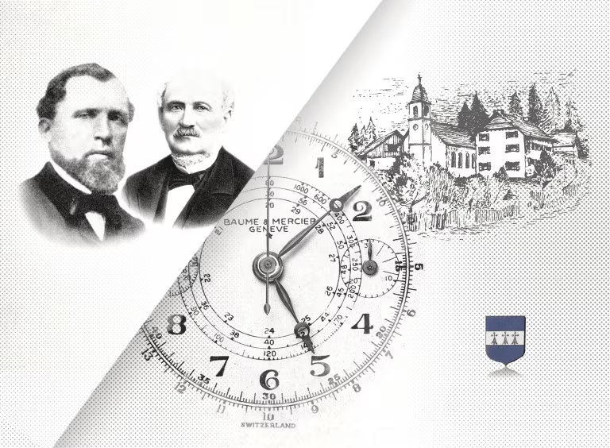
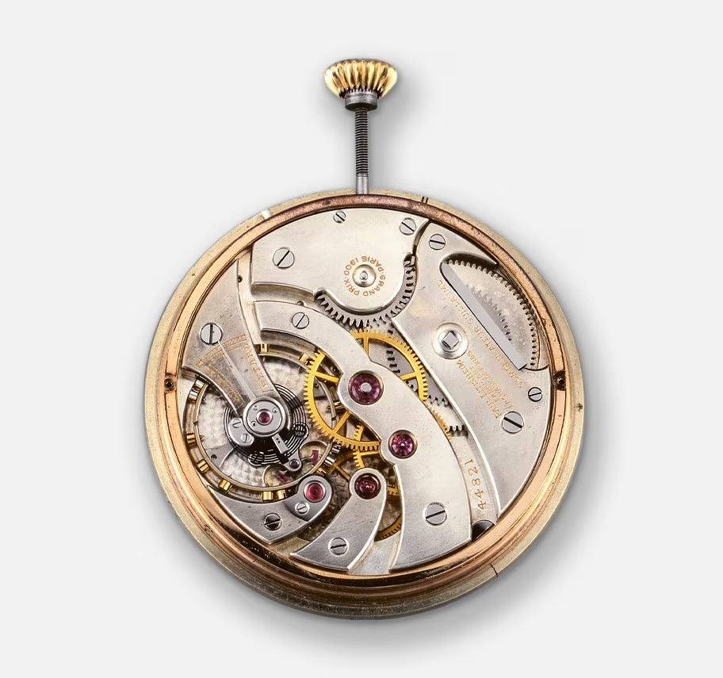
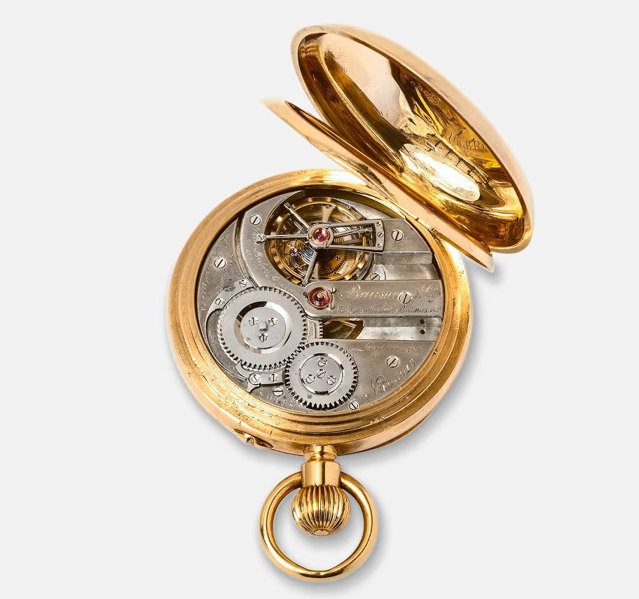
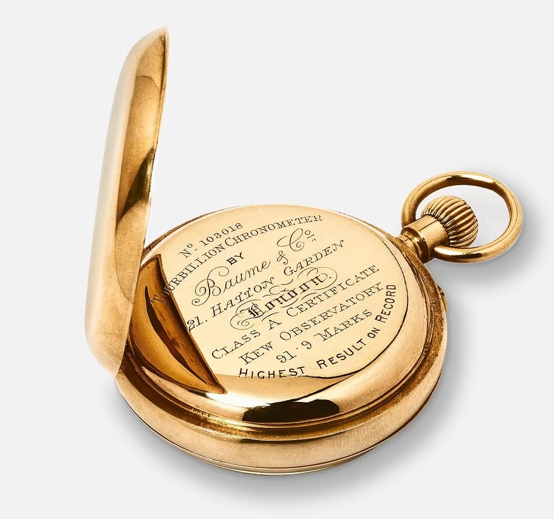
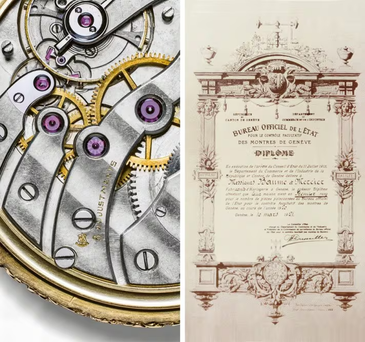
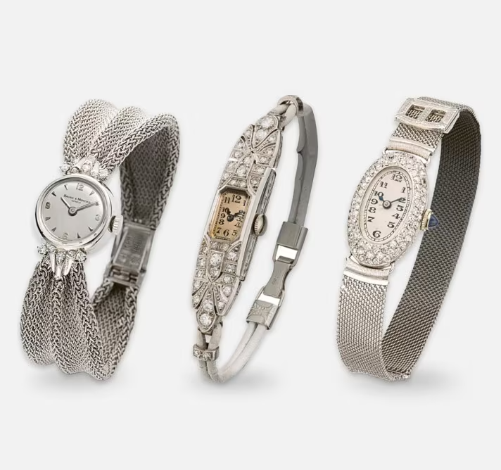

-
시계

-
메종
-
서비스
메종 보메 메르시에
보메 & 메르시에의 이야기
-


국가/지역을 선택하세요.
- AMERICAS
- ASIA
- EUROPE
- MIDDLE EAST - AFRICA
- INTERNATIONAL
- Canada (EN)
- Canada (FR)
- Chile
- Costa Rica
- Ecuador
- Guatemala
- Panama
- Paraguay
- USA
- Australia
- China (中国)
- Hong Kong SAR, China (EN)
- Korea (KR)
- India
- Indonesia (EN)
- Japan (日本)
- Philippines (EN)
- Singapore (EN)
- Vietnam (EN)
- Albania (EN)
- Belgium (EN)
- Bulgaria (EN)
- Croatia (EN)
- Cyprus (EN)
- Czech Republic (EN)
- Denmark (EN)
- Deutschland
- España
- Finland (EN)
- France
- Greece (EN)
- Hungary (EN)
- Ireland
- Italia
- Luxembourg (EN)
- Malta (EN)
- Monaco (EN)
- Österreich
- Poland (EN)
- Portugal
- Romania (EN)
- Schweiz (DE)
- Suisse (FR)
- Svizzera (IT)
- Slovakia (EN)
- Slovenia (EN)
- Sweden (EN)
- The Netherlands (EN)
- United Kingdom
- لإمارات العربية المتحدة (العربية)
- United Arab Emirates (EN)
- South Africa
- International (EN)
- International (FR)
- International (ES)
- International (PT)
- دولي (عربي)
"완벽함만을 받아들이고, 최고 품질의 시계만을 제작합니다."
"ACCEPT ONLY PERFECTION. ONLY MANUFACTURE WATCHES OF THE HIGHEST QUALITY."
-
보메 메르시에 - 기원
모든 것은 1830년 루이 조셉 보메가 스위스 쥐라 지방 베른 주의 한 마을인 레부아에 시계 제작 매장을 열면서 시작되었습니다. 4년 후, 그의 아들 루이-빅터와 셀레스틴 보메는 "프레르 보메, 라 파미유 루이 조셉(Frères Baume, la Famille Louis Joseph)"이라는 이름으로 사업을 등록했습니다. 그들의 열정과 기술을 바탕으로, 회사, 더 나아가 시계 제작은 최첨단 혁신을 담은 탁월한 작품들을 탄생시키며 빠르게 발전했습니다.
- 
-
1840년 - 국제 확장
보메 브라더스는 런던에 지사를 설립하여 대영 제국과 인도, 호주, 뉴질랜드를 포함한 극동 지역 시장으로 브랜드를 확장했습니다. 당시 영국은 상업 및 군사 해상 작전에서 정확한 시간 측정이 전략적 정확성을 보장했기 때문에 크로노미터에 특히 주목했습니다. 하우스의 정신을 반영하는 이 선구적인 선택은 보메 메르시에가 워치메이킹의 노하우로 명성을 떨치게 하는 계기가 되었습니다.

-
1851년 - 쥐라에 레핀 구경 도입
보메(Baume) 사는 쥐라(Jura)에 레핀(Lépine) 칼리버를 도입하는 데 선구적인 역할을 했습니다. 이 새로운 무브먼트 구조는 시계의 신뢰성, 견고성, 그리고 외관을 크게 향상시켰습니다. 이 무브먼트는 빠르게 널리 보급되어 회사의 번영에 상당한 영향을 미쳤지만, 새로운 무브먼트를 제작하기 위해서는 생산 방식의 변화가 필요했습니다.
- 
-
큐 천문대
19세기 후반, 워치메이커 하우스는 가장 엄격한 크로노미터 경연대회에서 우승을 차지했는데, 그중에서도 가장 권위 있는 경연대회는 영국 큐 천문대 경연대회였습니다. 1885년, 워치메이커 하우스가 큐 테딩턴 경연대회에 처음 참가했을 때, 스위스산 시계 3개가 7위 안에 들었습니다. 이듬해에는 4개의 시계가 수상의 영예를 안았습니다. 1887년에는 스플릿 세컨즈 크로노그래프로 경연대회 최고 점수(100점 만점에 85.1점)를 획득했습니다. 1892년에는 투르비용 이스케이프먼트를 장착한 키리스 크로노미터가 91.9점을 기록하며 1위를 차지했습니다. 이는 10년 후인 1903년에야 깨질 수 있는 역대 최고 기록이었습니다.
- 
-
국제적 인정
1860년부터 1910년까지 보메 하우스는 파리, 런던, 제네바에서 열린 세계 박람회에 참가하여 10개의 그랑프리와 5개의 금메달을 수상했습니다. 이 상들은 각 연도의 가장 혁신적이고 최고 품질의 제품에 수여됩니다.
- 
-
우연한 만남
하우스의 운명과 워치메이킹 비전은 1918년, 재능 있고 독창적인 아방가르드 시계 제작자 윌리엄 보메(William Baume)가 귀족적인 매너리즘을 지닌 세계적인 미학자이자 예술계와 인연이 있는 비전가이자 유능한 사업가인 폴 메르시에(Paul Mercier)와 손을 잡으면서 결정적인 전환점을 맞이했습니다. 1912년, 두 사람은 만나자마자 곧바로 우정을 쌓으며 서로를 보완하는 동반자 관계를 맺었습니다. 1920년 8월 27일, 그들은 제네바에 "보메 & 메르시에(Baume & Mercier)"를 설립하여 워치메이킹 전문 지식과 디자인에 대한 열정 사이의 대화를 시작했으며, 이는 수십 년 동안 이어지는 컬렉션을 통해 계승되었습니다. 한 사람의 실용주의는 다른 한 사람의 예술적 감성과 균형을 이루며, 남성용 초슬림 시계와 여성용 주얼리 시계를 통해 미학에 중점을 두었습니다.
-
품질 인증
보메 메르시에가 설립되자마자 윌리엄과 폴은 현대적인 매력을 지닌 고급 시계 제작에 집중했습니다. 브랜드는 1920년에 등록되었지만, 1921년 3월 10일 제네바 공화국 상무부와 제네바 주 상무부는 보메 메르시에가 1920년 국가 공식 사무소에서 인증받은 시계 수 1위를 차지했다는 인증서를 발급했습니다.
- 
-
보석 시계와 초슬림 시계에 대한 찬사
1920년 7월, 보메 & 메르시에 시계는 제네바 시계 박람회에서 큰 성공을 거두며 언론의 열렬한 반응을 얻었습니다. 한 기자는 "제네바, 그랑주, 비엔의 보메와 메르시에가 선보인 6라인 주얼리 워치와 초슬림 워치를 눈여겨봐야 합니다. 그들의 하우스는 정교한 무브먼트와 소형 칼리버를 다양하게 선보입니다."라고 평했습니다.
- 